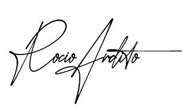

Desactivar Preloader
Horario de atención : Lun-Sab 8:00-21:00
Teléfono : +51-998-877-671
Correo : oculoplasticaperu@email.com
MÉDICO ESPECIALISTA
La Dra. Rocío Ardito es oftalmóloga, especialista en cirugía cosmética y reconstructiva de los ojos y estructuras cercanas a ellos.


- Profesional : Dra. Rocio Ardito.
- Especialidad : Oftalmólogia.
- Graduación : Egresada de la Universidad Mayor de San Marcos.
- Experiencia : Mas de 20 años en cirugias de reconstrucción de ojos.
- Email : rocioardito@oculoplasticaperu.com
La Dra. Rocío Ardito es oftalmóloga, especialista en cirugía cosmética y reconstructiva de los ojos y estructuras cercanas a ellos.
Su experiencia y trabajo en difundir la subespecialidad, ha hecho que muchos pacientes busquen a un oftalmólogo que se dedique exclusivamente a la Oculoplástica, para garantizar el máximo cuidado de los ojos en una cirugía de párpados.
Después de ingresar y graduarse entre los primeros puestos en la prestigiosa Facultad de Medicina de la Universidad Nacional Mayor de San Marcos de Lima, alcanzó el primer lugar en el examen de ingreso al residentado de Oftalmología, llevado a cabo en el Instituto Nacional de Oftalmología de Lima. Durante este período obtuvo una beca para el Curso de Oftalmología de la Universidad de Stanford, California. Posteriormente, realizó la subespecialidad de Orbita, Oculoplástica y Vías Lagrimales en la Asociación para Prevenir la Ceguera en México.
Ha sido Presidente del Capítulo de Oculoplástica de la Sociedad Peruana de Oftalmología y ha participado activamente en cursos de la subespecialidad en varios lugares del mundo, realizando ponencias, asistiendo a cirugías y presentando trabajos de investigación. Atiende pacientes en inglés, italiano, francés, portugués y quechua.
Experiencia
Cursos y Congresos en el extranjero
- 30° Conferencia Anual de la Asociación de Oculoplástica de la India. Guwahati, India, Setiembre 2019.
- 1° Congreso de Rehabilitación con Prótesis Oculares, Bogotá, Colombia, Agosto 2019.
- XXXIV Congreso Panamericano de Oftalmología, Cancún. México, Mayo 2019.
- Pre-Congreso de la Academia Panamericana de Prótesis oculares y Contactología Protésica, Guayaquil, Ecuador, Marzo 2019.
- 1°Congreso Internacional de la Sociedad Boliviana de Oculoplástica, enero 2019.
- Curso de Oftalmología de la Universidad de Sao Paulo, Brasil, Diciembre 2018.
- 6° Congreso de la Sociedad Iberoamericana de Oculoplástica. Ciudad de México, Noviembre 2018.
- Visita al Servicio de Oculoplástica y al laboratorio de prótesis oculares del Moorfields Eye Hospital, Londres, Reino Unido, Octubre 2018.
- XXXIII Congreso Panamericano de Oftalmología, Lima, Perú, Mayo 2017.
- IV International Course of Orbitoplastic Surgery. Praiano, Italia, Octubre 2016.
- XV Congreso Salvadoreño de Oftalmología. San Salvador, El Salvador, Mayo 2016.
- Curso Oculoplastica con Altura. Copacabana, Bolivia, Marzo 2015.
- XXIV Congreso de la Sociedad Española de Cirugía Plástica Ocular y Orbitaria. Granada, España, Junio 2014.
- Congreso de la Sociedad Brasilera de Oculoplastia. Buzios, Brasil, Mayo 2014.
- Orbital Surgery Master's Symposium and Dissection Workshop. Jules Stein Eye Institute, Los Ángeles, EEUU, Febrero 2014.
- 32° ESOPRS Anual Meeting. Barcelona, España, Septiembre 2013.
- Congreso de la Sociedad Brasilera de Oftalmología, Foz de Iguazu, Brasil, Mayo 2013.
- XXI Congresso Internacional de Oculoplástica. Gramado, Brasil, Abril 2013.
- III Congreso Iberoamericano de Oculoplástica y Órbita 2012. Buenos Aires, Argentina, Setiembre 2012.
Cursos y Congresos nacionales
- Congreso Internacional del Capítulo de Oculoplástica de la Sociedad Peruana de Oftalmología, Lima, Abril 2019.
- Congreso Nacional de Oftalmología, Lima, Agosto 2018.
- VIII Congreso de la Sociedad Latinoamericana de Glaucoma, Lima, Noviembre 2016.
- XXVI Congreso Peruano de Oftalmología. Lima, Agosto 2016.
- XV Congreso Regional de Oftalmología-XVI Congreso de Prevención de la Ceguera-Curso Internacional de Ecografía Ocular, Arequipa, Octubre 2015.
- Curso Internacional de Cirugía Plástica Oculofacial, Enfoque Multidisciplinario. Cusco, Noviembre 2014.
- XV Congreso Peruano de Oftalmología. Lima, Setiembre 2014.
- XV Congreso Peruano de Prevención de Ceguera Y XIV Congreso Regional de Oftalmología. Trujillo, Setiembre 2013.
- 32° ESOPRS Anual Meeting. Barcelona, España, Septiembre 2013.
- XIV Congreso Peruano de Oftalmología. Lima, Setiembre 2012.
Presentaciones y Trabajos
- Dysmorphic syndrome and depression in oculoplastic patients. 30° Conferencia Anual de la Asociación de Oculoplástica de la India. Guwahati, India, Setiembre 2019.
- Ocular prostheses, what the oculoplastic must know. 30° Conferencia Anual de la Asociación de Oculoplástica de la India. Guwahati, India, Setiembre 2019.
- Strategies to deal with the complications of other surgeons. 30° Conferencia Anual de la Asociación de Oculoplástica de la India. Guwahati, India, Setiembre 2019
- Evolución de los Implantes Orbitarios. 1° Congreso de Rehabilitación con Prótesis Oculares, Bogotá, Colombia, Agosto 2019.
- Tratamientos quirúrgicos frecuentes en usuarios de prótesis oculares. 1° Congreso de Rehabilitación con Prótesis Oculares, Bogotá, Colombia, Agosto 2019.
- Soluciones en pacientes con cascarilla escleral. Pre-Congreso de la Academia Panamericana de Prótesis oculares Y Contactología Protésica, Guayaquil, Ecuador, Marzo 2019.
- Phtisis bulbi. Pre-Congreso de la Academia Panamericana de Prótesis oculares Y Contactología Protésica, Guayaquil, Ecuador, Marzo 2019.
- Cavidad anoftalmica. 1°Congreso Internacional de la Sociedad Boliviana de Oculoplástica, enero 2019.
- Prótesis oculares. 1°Congreso Internacional de la Sociedad Boliviana de Oculoplástica, enero 2019.
- Suspensión al frontal. Curso de Oftalmología de la Universidad de Sao Paulo, Brasil, Diciembre 2018.
- Prótesis oculares en implantes orbitarios poco adecuados. 6° Congreso de la Sociedad Iberoamericana de Oculoplástica. Ciudad de México, Noviembre 2018.
- Implantes en fracturas orbitarias. 6° Congreso de la Sociedad Iberoamericana de Oculoplástica. Ciudad de México, Noviembre 2018.
- Cómo prevenir complicaciones en evisceración. XXXIII Congreso Panamericano de Oftalmología, Lima, Perú, Mayo 2017.
- Rehabilitación cosmética en anoftalmos. XXXIII Congreso Panamericano de Oftalmología, Lima, Perú, Mayo 2017.
- Toxina Botulínica en Distonías Faciales. XXVI Congreso Peruano de Oftalmología, Lima, Perú, Agosto 2016.
- ¿Qué hacer para tener resultados más predecibles en ptosis palpebral? XXVI Congreso Peruano de Oftalmología, Lima, Perú, Agosto 2016.
- Actualización en Cirugía de Ptosis. XV Congreso Salvadoreño de Oftalmología. San Salvador, El Salvador, Mayo 2016.
- Blefaroplastía Transconjuntival. XV Congreso Salvadoreño de Oftalmología. San Salvador, El Salvador, Mayo 2016.
- Taller de manejo de distonías faciales con toxina botulínica. XV Congreso Salvadoreño de Oftalmología. San Salvador, El Salvador, Mayo 2016.
- Ptosis peligrosas. XV Congreso Regional de Oftalmología-XVI Congreso de Prevención de la Ceguera-Curso Internacional de Ecografía Ocular, Arequipa, Perú, Octubre 2015.
- Póster: Reparación de fractura de suelo de órbita con malla preformada de titanio. XXV Congreso de la Sociedad Española de Cirugía Plástica Ocular y Orbitaria, Salamanca, España, Junio 2105.
- Video: Injerto Dermograso: herramienta versátil. XXV Congreso de la Sociedad Española de Cirugía Plástica Ocular y Orbitaria, Salamanca, España, Junio 2105.
- Ventajas y limitaciones de la blefaroplastia transconjuntival. Curso Internacional de Cirugía Plástica Oculofacial, Enfoque Multidisciplinario. Cusco, Perú, Noviembre 2014.
- Blefaroplastía transconjuntival. Congreso de la Sociedad Brasilera de Oculoplastia. Buzios, Brasil, Mayo 2014.
- Cavidad Anoftálmica: resolviendo problemas de adaptación. XV Congreso Peruano de Prevención de Ceguera Y XIV Congreso Regional de Oftalmología. Trujillo, Perú, Setiembre 2013.
- Cirugía Facial: Técnicas antienvejecimiento, toxina botulínica, rellenos y lipoestructura facial. Sociedad Peruana de Otorrinolaringología y Cirugía Facial, Curso de Educación Médica Continua. Lima, Perú, Agosto 2013.
- Corrección de secuelas del trauma orbitario. Jornadas Argentinas de Oftalmología. Buenos Aires, Argentina, Mayo 2013.
- Blefaroplastía inferior: más que sacar grasa. Jornadas Argentinas de Oftalmología. Buenos Aires, Argentina, Mayo 2013.
- Prótesis oculares: resolviendo problemas de adaptación. Jornadas Argentinas de Oftalmología. Buenos Aires, Argentina, Mayo 2013.
- Video: Retalho tarsoconjuntival em exposicao de implantes orbitarios. XXI Congresso Internacional de Oculoplástica. Gramado, Brasil, Abril 2013.
- Severa laxitud horizontal como primer indicio de enfermedad de Kennedy. III Congreso Iberoamericano de Oculoplástica y Órbita 2012. Buenos Aires, Argentina, Setiembre 2012.
- Tratamiento de enoftalmos en anoftalmos. XIV Congreso Peruano de Oftalmología. Lima,Perú, Setiembre, 2012.
- Proptosis Ocular. XIV Congreso Peruano de Oftalmología. Lima, Perú. Setiembre, 2012.
Otros
- Presidente de Mesa Curso de toxina botulínica y rellenos. XXVI Congreso Peruano de Oftalmología, Lima, Agosto 2016.
- Coordinadora Curso Oculoplástica I. XV Congreso Regional de Oftalmología-XVI Congreso de Prevención de la Ceguera-Curso Internacional de Ecografía Ocular, Arequipa, Octubre 2015.
- Moderador del Bloque Oculoplástica y Vías Lagrimales. XV Congreso Peruano de Oftalmología. Lima, Setiembre 2014.
- Presidente del Comité Organizador del Curso Internacional de Cirugía Plástica Oculofacial, Enfoque Multidisciplinario. Cusco, Noviembre 2014.
- Moderador en el Bloque de Cirugía Plástica y Órbita. XV Congreso Peruano de Prevención de Ceguera Y XIV Congreso Regional de Oftalmología. Trujillo, Setiembre 2013.
- Panel de Expertos en el Curso: Emergencias/Urgencias y complicaciones en oculoplastía ¿Cómo las resolvemos? Jornadas Argentinas de Oftalmología. Buenos Aires , Argentina, Mayo 2013.
- Directora del Curso de Tumores. Jornadas Argentinas de Oftalmología. Buenos Aires, Argentina, Mayo 2013.
- Coordinadora del Curso Oculoplástica: Órbita y reconstrucción ocular. XIV Congreso Peruano de Oftalmología. Lima, Setiembre 2012.
- Coordinadora del Curso Oculoplástica: Estética y vías lagrimales. XIV Congreso Peruano de Oftalmología. Lima, Setiembre 2012.
Video Testimonial
| Dia | Hora |
|---|---|
| Lunes | 9.00 - 22.00 |
| Martes | 9.00 - 22.00 |
| Miercoles | 9.00 - 22.00 |
| Jueves | 9.00 - 22.00 |
| Viernes | 9.00 - 22.00 |
| Sabado | 9.00 - 13.00 |
Regardless of whether you need to stay in your own house, are searching for help with a more established relative, looking for exhortation on paying for care, we can help you.
Últimas Noticias


Feed Oculoplástica


Copyright© Oculoplástica Ardito - Todos los derechos reservados.